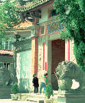

呂清夫 撰文

台灣錢雖然淹腳目，但是風景區卻在惡質化，簡直和過去不能相比。二十多年前到獅頭山去，到處充滿古風和綠意，每爬一段山，就不期而遇到一座古廟，充滿奇遇之感。這些古廟似乎都與大自然化成一體，它們沒有刺眼的顏色與浮誇的建築，每一座廟似乎都像一個高深內斂的隱士，可以讓遊客低迴不已。那時候我還在獅頭山的紀念照片上，隨便寫下「想當年，紫陽門外」，「別了獅山，我將重來」等題字。等到二十年後終於一償宿願再上獅山的時候，我竟發現，我好像看到了一個患了老人癡呆症的朋友，雖然外形還在，但已經不是我印象中的朋友了。當你走到獅山人口，馬上映入眼簾的是山頭破了一個大洞，挖土機已挖出一片童山濯濯的山坡建地，青翠的山區宛如開膛破肚。你再往前走，迎面而來的是一座顏色刺眼、奇大無比的香客大樓，這當然是近年犧牲山林之勝換來的。當你從香客大樓門口走過，又可聞到一股強烈的氣味，那不是線香的味道，而是有如宿舍餐廳陳年累積出來的酸腐味，叫遊客只想快步走過。再看看久違的古廟，又幾乎失盡了古意，因為古牆為了翻新，遂到處鑲滿了亮晶晶的黑色石板，石板上刻的是粗糙無比的畫面，畫面上刻出的白色粗線與黑色石板之間，構成了刺眼的對比，並使古廟頓時顯得有如東挖西補的違建，又好像老和尚穿上了帶有亮片的衣裳。外加廟前廟後橫七豎八、半途輟工的無數工程，更叫人再也不想舊地重遊了。其實不必走遠，我們只要在首善的台北近郊轉一轉，即可窺見事態之一斑。根據報載，烏來風景區日漸衰退，主其事者認為「重整風景區的勝景並不難，政府只要花一千萬元左右，幫地方興建具有山地鄉特色的文化村……」。我的看法則不相同，日月潭也有過文化村，然至今已乏人問津，日月潭吸引遊客的是湖光山色，文化村的樣板歌舞不過是點綴而已，如果為建文化村而大興土木，那麼山林的破壞將會得不償失，尤其是在公共建設品質、品味普遍不高的國內，更不宜輕言營建。其實，烏來的衰退應在於它不能保持山林之美，你看看嘛，一進門就要收門票，但是買票進門以後馬上看到的是什麼呢？那只是一群違建一般的民房而已，滿目破落，叫人不得不有受騙之感。等到找到一點好像比較像樣的地方，又要收費，因為人們要在此地乘坐花花綠綠的台車，才能到達風景線。過去的烏來不是這樣的，過去烏來的入口就是依山傍水，遊客在潺潺水聲之中，悠然忘我地進入山區，然後在水光山色之間，不知不覺來到了烏來瀑布。回程累了，才搭乘別具原始風味的台車回來。因之，過去的烏來雖沒有文化村，但是依舊人潮洶湧，烏來車站的客運車一直人滿為患，假日常見回程遊客爬窗子上車。不僅風景在惡化，遊客也在質變。近日到圓通寺一遊，得見千古未有之奇。原來這個佔地小小的寺廟，忽然一次扶老攜幼地，來了好幾百個的遊客，都是某公司的員工。大家一時都蟻聚在圓通寺正殿的前後，數百人滿坑滿谷地坐在地上做同一個動作，那就是吃便當！我看看錶，怪怪，上午十點才過。我於是想，「吃飯皇帝大」，隨便人擠人地坐下來吃飯不會不太衛生嗎？何不找一塊清幽的空地或樹下去吃呢？因為人那麼多，不要說摩肩接踵，即使是山區的空氣也因此變壞，這種吃一定比在家吃的品質還差，然而大家似乎樂此不疲。再從旁觀的遊客看來，坐在廟口地上吃飯也實在不雅，而且妨礙別人通行、製造大量垃圾。不僅如此，還製造大量噪音，因為吃便當的同時，他們還用麥克風舉辦大摸彩，吵得其他遊客只有敗興而回了。拿上好的便當與高級的獎品，到風景區去大幹一場，把風景區搞得烏煙瘴氣，這似乎是台灣社會富裕以後的新興休閒法，但是大家在滿足物質慾望的同時，似乎很少注意到山林古蹟的可貴，製造髒亂、身處髒亂亦不以為意，風景區由是每下愈況，真可以說有什麼樣的遊客，就有什麼樣的風景了。
原載1990.11.30.自立早報，收入1994年，呂清夫著「現代都市叢林派」